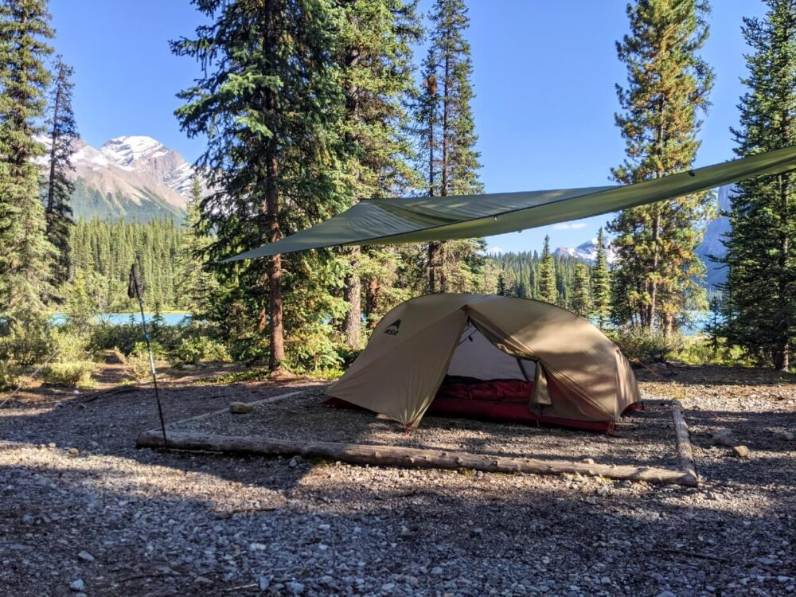
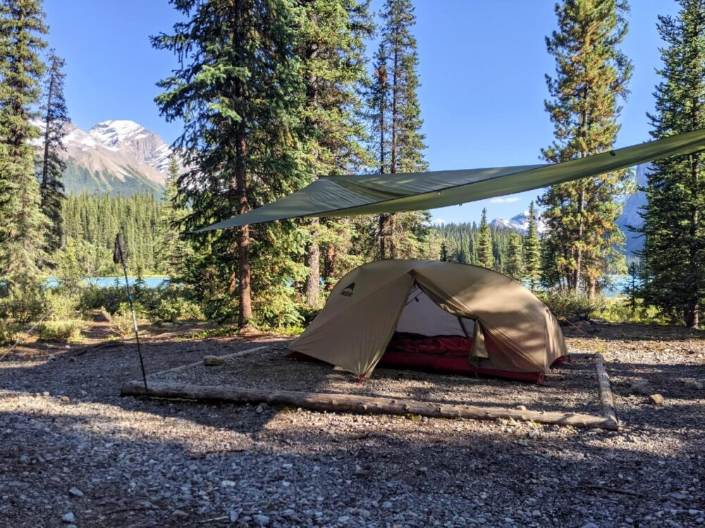
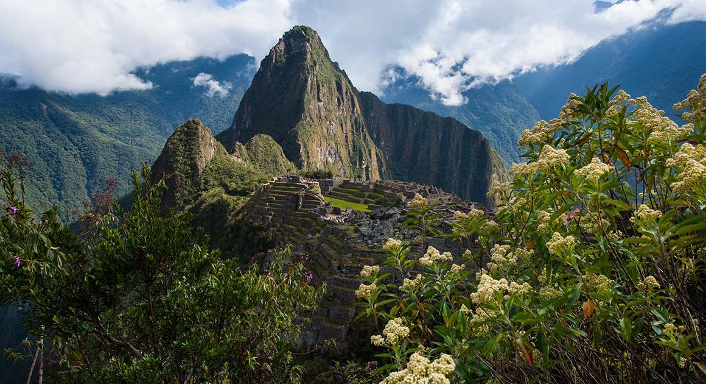

Jungfrau, Switzerland

Jungfrau is a city in Switzerland known for its mountain summits nicknamed the “top of Europe.” It is very famous also for its railway created in 1912 that can bring you to a height of 3454m. At the summit there are outstanding views where you can see the whole city and beyond.
The scenery consists of valleys, waterfalls, rock walls, and snow peaks. When visiting, it is vital to go on a day with good weather because it enhances the quality of the views. Hiking is very popular at short trails called Grutschalp and Murren. A very common tourist attraction is also exploring the Lauterbrunnen valley.
Photo Gallery


Okavango Delta, Botswana

Even though diamonds are Botswana’s largest export, its true jewel is the wildlife in it. All the big five game animals are present in the Okavango Delta. It also holds one of the world’s largest animal populations, including elephants, lions, cheetahs, and more.
The Okavango Delta is in the middle of a desert, making it one of the few deltas that stand out from the other ~10000 deltas. Oil deposits were recently discovered in the rock in the Delta. This is a possible threat as extraction companies may pollute the water bodies, risking the lives of over 500 species of animals.
Photo Gallery


Time Squares NYC
 Time Squares gif
Time Squares gif
This is Time Squares in New York City, New York. It is normally always very crowded. There are a lot of skyscrapers and popular movie ads on the skyscrapers. It's busy with a lot of shops. It is one of the most popular destinations in New York City. People get here through subways, buses, etc.
Sometimes there can be a long line to enter a store. They sell Disney stuff and I Love NY clothes and gifts. It is lively and crowded during the night and day. There are many food stalls and many great shopping places.
Broadway in Nashville
 Image of Broadway
Image of Broadway
Nashville is known as a music city. Broadway clearly display that reputation through the lively bars and live music from day to night. During the night, Broadway is still full of people and noises coming from the live music performances.
Broadway is one of the most visited tourist site at Nashville. It is located in downtown Nashville. There are many gift shops and restaurants that give you a taste of Nashville. In addition, it is close to some of Nashville's other famous tourist sites.
Parthenon in Nashville
 Parthenon in Nashville
Parthenon in Nashville
The picture is taken during the night, which shows the Parthenon golden. The building lights up when it gets dark so it's easy to spot. During the day, it looks like the Parthenon in Athens, Greece because it was constructed to look like it.
Inside, there's some statues, including the big golden statue of Athena with her shield. There are signs explaining Greek Mythology. There are two floors.
Vanderbuilt University
Image of Vanderbuilt{kind=link}
Vanderbuilt is one of the well-known universities in Nashville. Nearby is the Centennial Park, which locates the Parthenon. Within the image, there is a bell tower and campus buildings. This is a beautiful view of Vanderbuilt during sunrise.
There are undergraduate and graduate buildings on campus. There's also on-campus dorms. In the far view of the image, we can see the city structure of Nashville and various housings. The image seems to be taken during spring or summer since the leaves are vivid and green.
Cheekwood Arboretum
Image of Cheekwood{kind=link}
There are all sorts of color in the spectrum that shows up in this image. It reminds me of summer when I visited this place. It was really hot at that point and we saw many different types of plants and flowers, similar to this photo.
Cheekwood is a large arboretum consisting of multiple gardens and even a huge mansion. There are garden other countries and gardens named after the plants' names.
Grand Ole Opry
 Grand Old Opry
Grand Old Opry
This is a popular site to listen to some live performances. Many groups from around the nation come to perform. The performance is usually 2 hours long. They have performances that express Nashville's culture through country music.
An hour in the performance, they would normally have a break and allow people to tour the backstage. They have great country music stars playing bass guitar, guitar, mandarin, piano, etc.
Jasper, Canada

Spirit island, located in the heart of Maligne Lake, Jasper was a spiritual place of healing for the rocky mountain tribe for over 2000 years before they were displaced in the 1900s. They believed that each mountain with a face in the hall of the gods(the mountains in front of spirit island) contains the essence of each god of each religion as well as all notable rocky mountain tribesmen.
In 2020, there was a forest fire in a nearby forest region of Lake Maligne. Because of that forest fire, the few remaining tribe members from that same rocky mountain tribe approached the Canadian government to get access to Spirit Island away since they believe that the forest fire was a punishment by their gods for being away from their spiritual home for so long. Now, the rocky mountain tribe works with the Canadian government to perform their spiritual healing once a year.
Photo Gallery
 



Machu Picchu, Peru

Machu Picchu is an ancient Incan citadel located in the Andes Mountains of Peru, South America. It is renowned for its breathtaking beauty, architectural ingenuity, and historical significance. Believed to have been built in the 15th century during the height of the Inca Empire, Machu Picchu served as a royal estate or religious retreat for the Incan ruler Pachacuti.
Machu Picchu's remote location and mysterious abandonment in the decades following its construction have contributed to its status as a UNESCO World Heritage Site and one of the New Seven Wonders of the World. The site is characterized by its well-preserved stone structures, including temples, plazas, residential buildings, and intricate terraces carved into the mountainside. The precise construction methods used to build Machu Picchu without the use of mortar have puzzled archaeologists for decades. The entire complex is surrounded by stunning panoramic views of the surrounding valleys and mountains.
Photo Gallery



Ari Atoll, Maldives

Maldives is an archipelagic state and country in South Asia, situated in the Indian Ocean. It lies southwest of Sri Lanka and India, about 750 kilometres (470 miles; 400 nautical miles) from the Asian continent's mainland. The Maldives' chain of 26 atolls stretches across the equator from Ihavandhippolhu Atoll in the north to Addu Atoll in the south.
Maldives offers such an incredible combination of dazzling beaches, cerulean waters and fantastic diving that its opening up to travelers without limitless financial resources is definitely a cause for celebration.
Photo Gallery